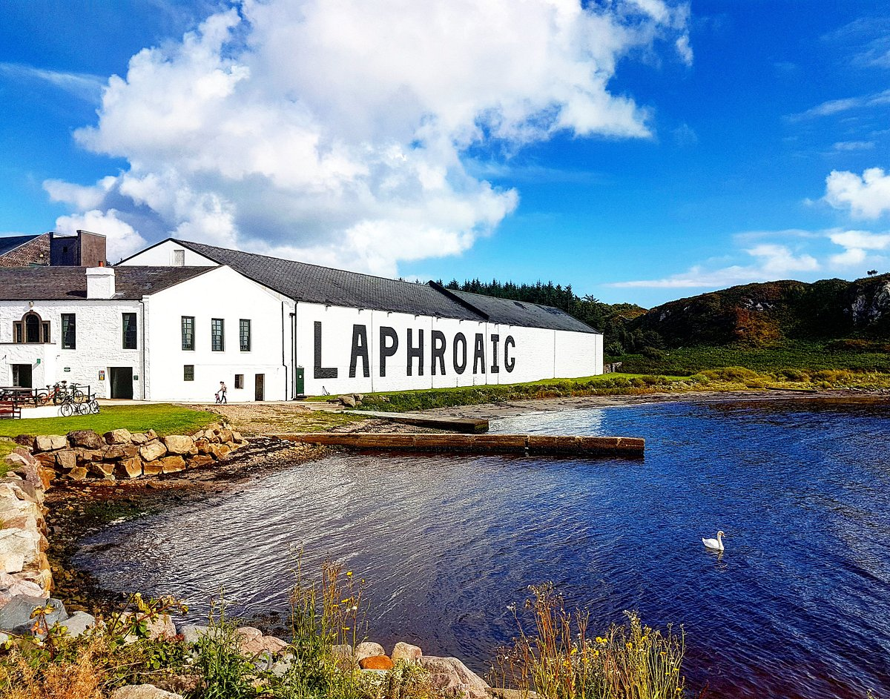
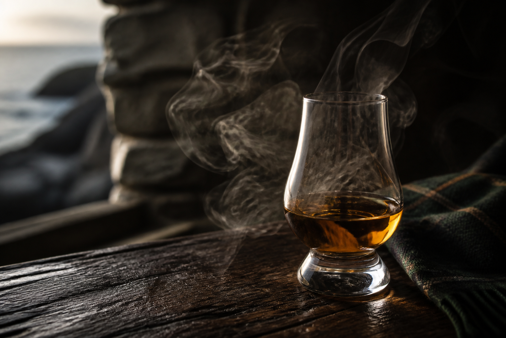
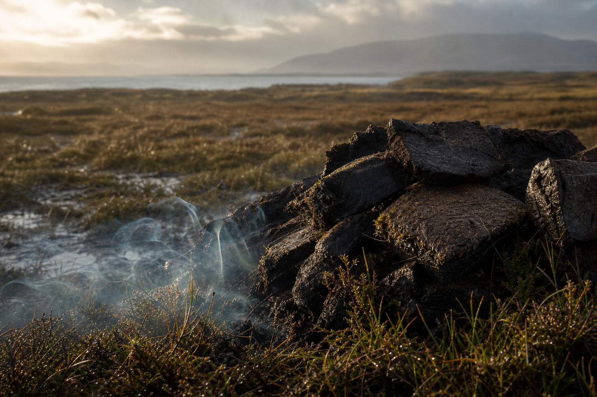
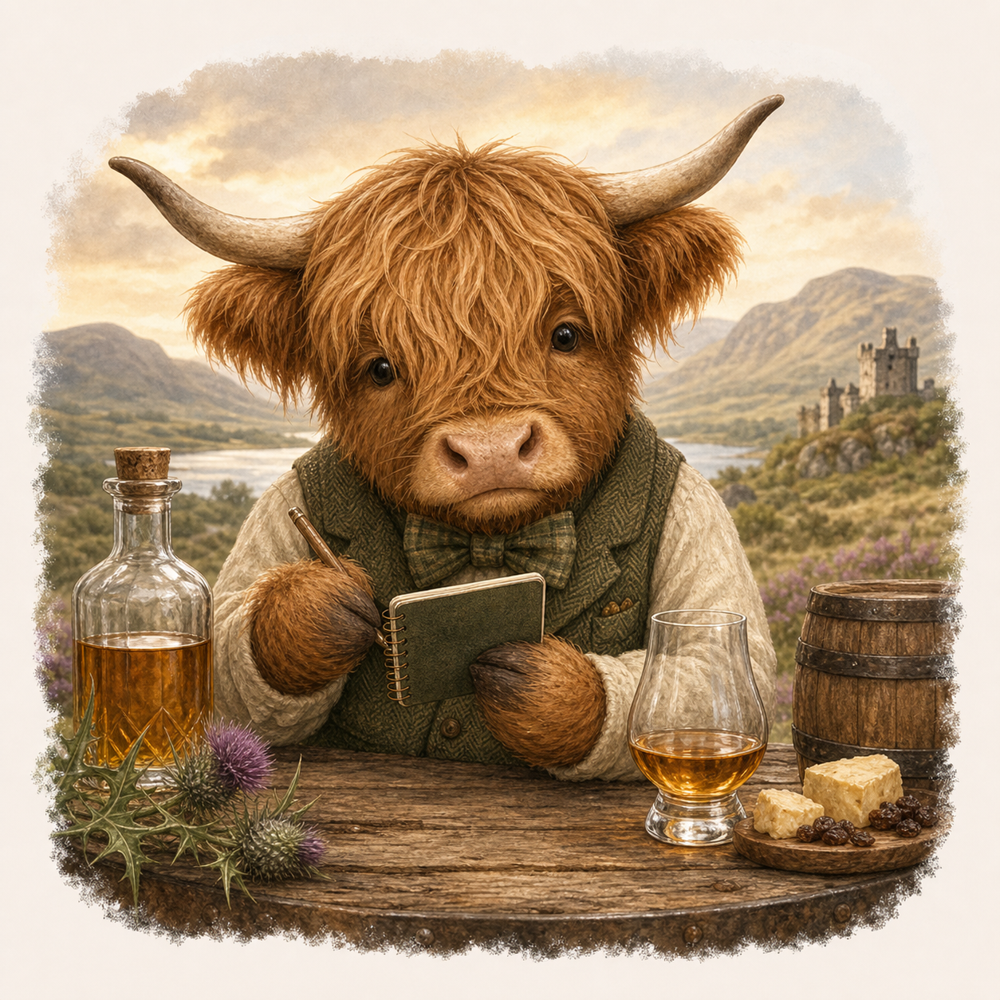

Alan's surprise
Not yet, gorgeous.
This page opens on 10th August, the day before the secret adventure. Until then, Nia is absolutely not leaving clues lying around.
Back to the itinerarySurprise unlocked
We’re going to Islay.
For the smoky, peaty whisky you love most. This is the big one: Islay, Laphroaig, and a whole overnight adventure built around it.




A tiny peaty poem
There once was an Alan quite neat,
Who adored every whisky with peat.
So Nia said, “Right,
Here’s Islay overnight,”
And Laphroaig made the surprise complete.

Tuesday 11 August
Travel to Islay
First, the important bit: getting across to Islay. Leave Ronachan early enough to reach Kennacraig before vehicle check-in closes. Aim to be at the terminal around 9:00 am.
- Route
- Kennacraig to Port Askaig
- Operator
- Caledonian MacBrayne
- Vehicle check-in closes
- 9:30 am
- Ferry departs
- 10:00 am
- Arrives
- 11:55 am at Port Askaig
- Vessel
- MV Isle of Islay
- Booking reference
- S2600303716
Tuesday 11 August
Laphroaig Distillery
This is the reason for the secret. A proper Islay whisky day for the smoky peatiness you love, with a tour at one of your absolute favourites.
- Tour time
- 2:00-3:30 pm
- Plan
- Arrive from Port Askaig, park, check in, then enjoy it properly
- Vibe
- Smoky, peaty, romantic, very Alan
.jpeg)
Tuesday 11 August
Stay on Islay
- Hotel
- Bridgend Hotel
- Address
- Bridgend, Islay, PA44 7PQ
- Check-in
- Approved from 5:00 pm
- Stay
- One night
- Checkout
- The next morning
Wednesday 12 August
Ferry Back
Drive from Bridgend Hotel to Port Askaig, then return to the mainland before heading on to Luss.
- Route
- Port Askaig to Kennacraig
- Vehicle check-in closes
- 9:05 am
- Ferry departs
- 9:35 am
- Arrives
- 11:30 am at Kennacraig
- Vessel
- MV Isle of Islay
- Booking reference
- S2600303716
- Next
- Drive from Kennacraig to Glenview Luss